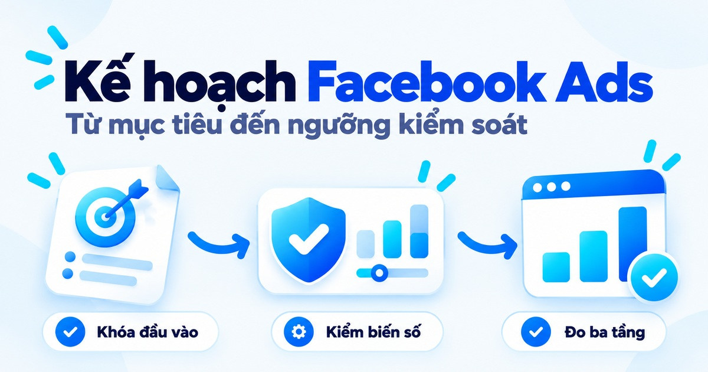
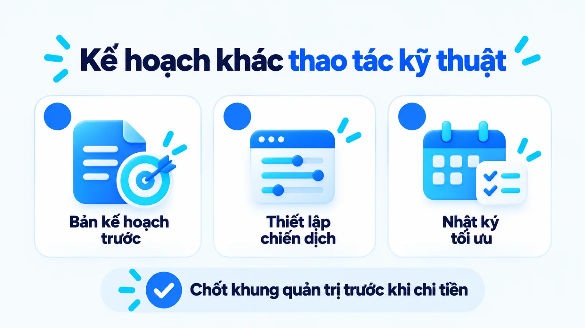
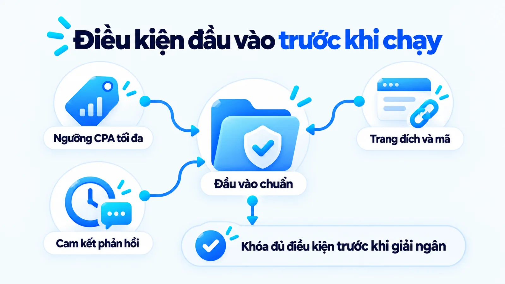
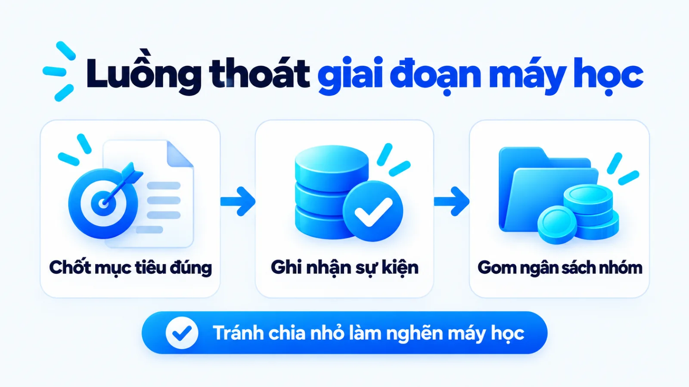
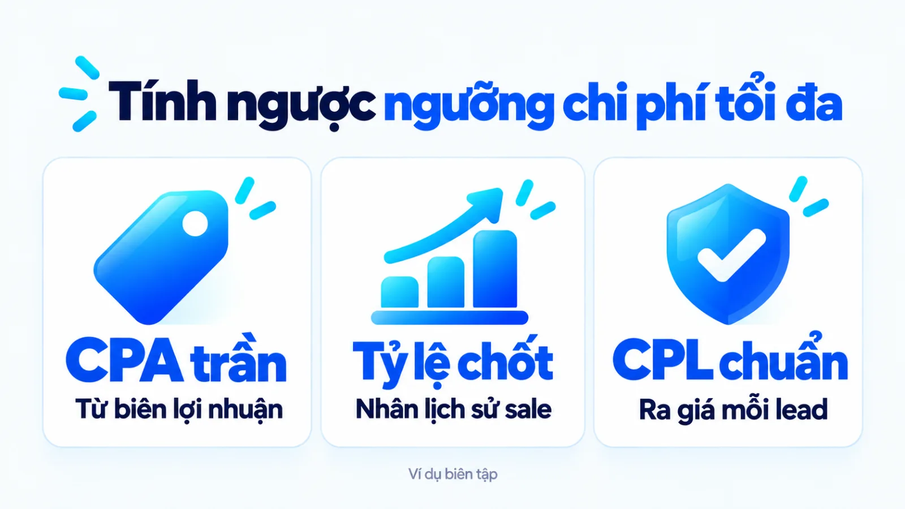
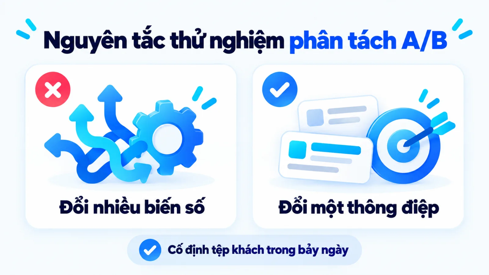
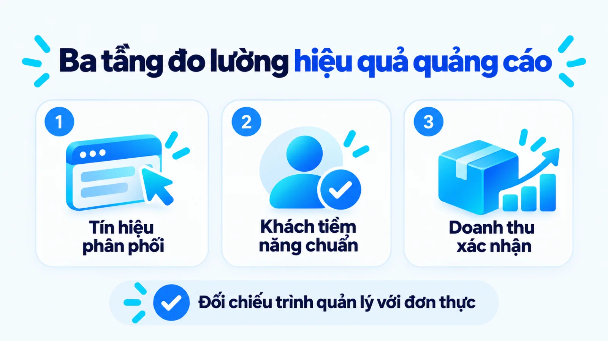
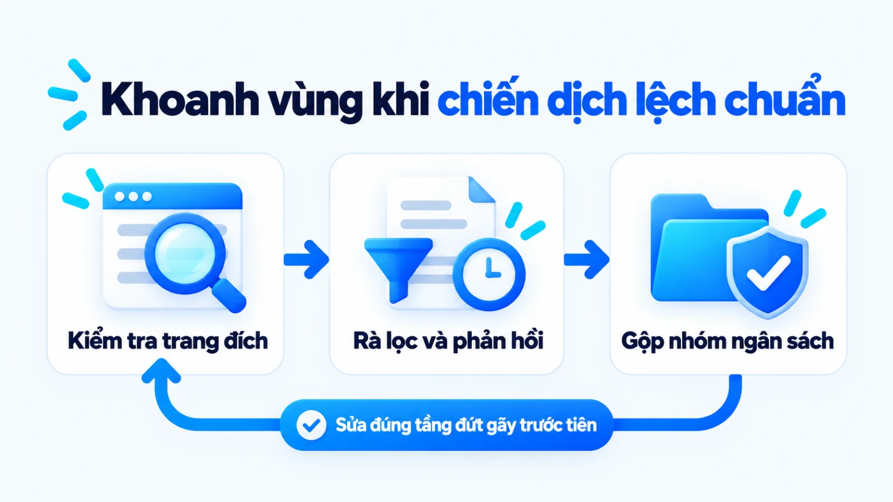

Kế hoạch chạy quảng cáo Facebook cho SME
Kế hoạch chạy quảng cáo Facebook là tài liệu quản trị xác định trước mục tiêu kinh doanh, phân khúc đối tượng, thông điệp, ngân sách, lịch thử nghiệm, chỉ số đo lường và người chịu trách nhiệm cho một kỳ triển khai trên nền tảng Meta. Với doanh nghiệp vừa và nhỏ, nếu mở trình quản lý để lên chiến dịch ngay khi chưa khóa các điều kiện đầu vào, đội ngũ rất dễ tiêu hết ngân sách thử nghiệm mà không phân biệt được lỗi nằm ở thông điệp, trang đích hay khâu tư vấn bán hàng. Khi đặt mọi quyết định chi tiêu trên cùng một khung kiểm soát từ trước, người quản lý mới biết rõ ngưỡng dừng lỗ, căn cứ mở rộng ngân sách và trách nhiệm của từng bộ phận. Tôi là Lê Tuấn Việt, Marketing Leader tại TAKI Group. Trong bài viết này, tôi làm rõ ranh giới giữa bản kế hoạch với thao tác kỹ thuật, quy trình sáu bước gắn với đầu ra và cách đọc chỉ số theo từng tầng chuyển đổi.
- Đăng ngày
- Cập nhật

Tóm tắt nhanh
- Kế hoạch chạy quảng cáo Facebook là bản thiết kế ra quyết định trước khi chi tiêu, tách biệt hoàn toàn với thao tác cài đặt trong Meta Ads Manager và nhật ký tối ưu hàng tuần.
- Doanh nghiệp vừa và nhỏ chỉ nên giải ngân khi đã làm rõ ba đầu vào: ngưỡng chi phí thu hút khách hàng từ biên lợi nhuận, hạ tầng ghi nhận sự kiện và cam kết tốc độ phản hồi của đội sale.
- Ngân sách cần chia rõ phần thử nghiệm có kiểm soát và phần mở rộng, tránh chia vụn nhiều nhóm quảng cáo khiến hệ thống rơi vào trạng thái giới hạn máy học.
- Hiệu quả chiến dịch phải được đọc theo ba tầng tách biệt gồm tín hiệu tương tác, khách hàng tiềm năng đạt chuẩn và doanh thu thực thu đã đối chiếu với CRM.
Mục lục bài viết8 phần
Kế hoạch chạy quảng cáo Facebook là gì?
Kế hoạch chạy quảng cáo Facebook là tài liệu quản trị xác định trước mục tiêu kinh doanh, phân khúc đối tượng, thông điệp, ngân sách, lịch thử nghiệm, chỉ số đo lường và người chịu trách nhiệm cho một kỳ triển khai trên nền tảng Meta. Nằm trong kế hoạch marketing tổng thể, văn bản này giúp SME (doanh nghiệp vừa và nhỏ) khóa nguyên tắc ra quyết định trước khi chi tiêu.

Trong vận hành thực tế, nhiều đội ngũ mở thẳng Meta Ads Manager (trình quản lý quảng cáo của Meta) để tạo chiến dịch ngay khi vừa có sản phẩm mà chưa thống nhất ngưỡng chi phí thu hút một khách hàng hay kịch bản xử lý liên hệ. Để tránh nhầm lẫn giữa tài liệu hoạch định trước khi chi tiền với thao tác kỹ thuật và nhật ký theo dõi hàng tuần, bảng dưới đây phân biệt ba công cụ theo ba tiêu chí.
| Tài liệu và thao tác | Mục đích và thời điểm dùng | Đầu ra kiểm soát |
|---|---|---|
| Bản kế hoạch quảng cáo | Thống nhất mục tiêu, ngân sách, đối tượng và ngưỡng chịu rủi ro trước khi giải ngân | Bản duyệt ngân sách, ma trận thử nghiệm và quy tắc xử lý khi lệch ngưỡng |
| Cấu hình Meta Ads Manager | Chuyển hóa các lựa chọn trong kế hoạch thành cấu hình kỹ thuật để phân phối | Cấu trúc chiến dịch, nhóm quảng cáo, sự kiện theo dõi và mẫu quảng cáo |
| Nhật ký tối ưu chiến dịch | Theo dõi biến động theo kỳ đo và ghi lại lý do chỉnh sửa | Lịch sử thay đổi ngân sách, đối tượng hoặc nội dung để rút bài học |
Bảng trên áp dụng khi làm việc nội bộ hoặc thuê ngoài, với điều kiện luôn tách riêng cột dự kiến và cột thực tế.
Kế hoạch chạy quảng cáo Facebook cần đầu vào nào?
Trước khi phân bổ ngân sách, một bản kế hoạch chạy quảng cáo Facebook khả thi cần chuẩn bị đủ ba nhóm đầu vào gồm bài toán kinh doanh kèm biên lợi nhuận, hạ tầng dữ liệu trang đích và năng lực xử lý của đội bán hàng. Thiếu một trong ba nhóm này, chi phí bỏ ra rất dễ chỉ tạo lượt nhấp mà không thành doanh thu.

Về bài toán kinh doanh, người lập kế hoạch tính ngược từ biên lợi nhuận gộp và tỷ lệ chốt đơn để khóa CPA (chi phí trên mỗi đơn hàng) cùng CPL (chi phí trên một khách hàng tiềm năng) tối đa. Về dữ liệu, theo tài liệu năm 2024 của Meta for Developers, Conversions API (giao diện lập trình ứng dụng chuyển đổi) giúp kết nối trực tiếp máy chủ hoặc CRM (hệ thống quản lý quan hệ khách hàng) với Meta để tối ưu phân phối.
Theo định nghĩa chỉ số năm 2024 của Meta Business Help Center, lượt nhấp liên kết chỉ đếm thao tác bấm đường dẫn, còn lượt xem trang đích chỉ ghi nhận khi trang cài Meta Pixel (mã theo dõi hành vi trên web) tải thành công. Tôi ưu tiên khóa thêm SLA (cam kết thời gian phản hồi) với đội bán hàng trong năm điều kiện đầu vào dưới đây:
- Ngưỡng chi phí hòa vốn: Đã tính mức CPA và CPL tối đa từ biên lợi nhuận gộp của sản phẩm chủ lực.
- Hạ tầng ghi nhận tín hiệu: Đã cài Meta Pixel trên trang đích và kết nối dữ liệu CRM để tránh đếm trùng.
- Tài sản nội dung và trang đích: Đã chuẩn bị thông điệp theo rào cản mua hàng và trang đích tải nhanh trên di động.
- Ngân sách chịu đựng thử nghiệm: Đã tách riêng khoản ngân sách mua dữ liệu máy học giai đoạn đầu khỏi kỳ vọng lãi ngay.
- Cam kết xử lý của đội bán hàng: Đã chốt người trực theo khung giờ, kịch bản lọc nhu cầu và thời hạn phản hồi.
Cách lập kế hoạch chạy quảng cáo Facebook 6 bước
Quy trình lập kế hoạch chạy quảng cáo Facebook cho doanh nghiệp vừa và nhỏ đi qua sáu bước tuần tự: chốt mục tiêu đầu ra, xác định đối tượng, chọn sự kiện chuyển đổi, thiết kế thử nghiệm nội dung, phân bổ ngân sách theo giai đoạn máy học và thiết lập ngưỡng kiểm soát. Mỗi bước đều gắn với đầu ra và dấu hiệu hoàn tất cụ thể.

Bước 1: Chốt mục tiêu và đầu ra kinh doanh
Người lập kế hoạch xác định hành động mục tiêu sau khi xem quảng cáo rồi ánh xạ sang trình quản lý. Theo hướng dẫn năm 2024 của Meta Business Help Center cho tài khoản toàn cầu, hệ thống ODAX (mục tiêu chiến dịch theo định hướng kết quả) gồm sáu nhóm: Mức độ nhận biết, Lưu lượng truy cập, Tương tác, Khách hàng tiềm năng, Quảng cáo ứng dụng và Doanh số.
Đầu ra và dấu hiệu hoàn tất: Bảng chốt mục tiêu ODAX kèm số lượng kết quả cần đạt; hoàn tất khi CPA và CPL tối đa không vượt biên lợi nhuận.
Bước 2: Xác định đối tượng cùng dữ liệu sử dụng
Doanh nghiệp liệt kê rõ tệp khách hàng từ CRM, người từng truy cập web hoặc tương tác fanpage để tiếp thị lại, đồng thời cài điều kiện loại trừ người đã mua nhằm tránh lãng phí ngân sách.
Đầu ra và dấu hiệu hoàn tất: Danh sách nhóm đối tượng kèm quy mô ước tính; hoàn tất khi đã gắn quy tắc loại trừ tệp trùng.
Bước 3: Chọn hành động chuyển đổi và cách ghi nhận
Người phụ trách chọn điểm chạm chuyển đổi để tối ưu ở cấp nhóm quảng cáo như gửi biểu mẫu trên trang đích, nhắn tin hoặc hoàn tất đơn hàng.
Đầu ra và dấu hiệu hoàn tất: Bảng quy ước tên sự kiện chuyển đổi và vị trí đặt mã; hoàn tất khi tín hiệu hoạt động trên môi trường thật.
Bước 4: Thiết kế thông điệp cùng phương án thử nghiệm
Đội ngũ phát triển các góc nội dung tháo gỡ rào cản mua hàng và đồng nhất giọng thương hiệu tới trang đích. Theo hướng dẫn năm 2024 của Meta Business Help Center, A/B testing (thử nghiệm phân tách hai phiên bản) chia ngẫu nhiên tệp độc lập để đo từng biến số riêng lẻ.
Đầu ra và dấu hiệu hoàn tất: Ma trận ghép cặp đối tượng với góc thông điệp; hoàn tất khi mỗi lượt thử chỉ đổi một biến số.
Bước 5: Phân bổ ngân sách thử nghiệm và mở rộng
Theo tài liệu chẩn đoán phân phối năm 2024 của Meta Business Help Center, nhóm quảng cáo chỉ thoát giai đoạn máy học khi tích lũy đủ sự kiện tối ưu hóa; nếu ngân sách quá thấp hoặc chia vụn nhiều nhóm, tài khoản sẽ rơi vào trạng thái giới hạn máy học.
Đầu ra và dấu hiệu hoàn tất: Bảng phân bổ ngân sách thử nghiệm và mở rộng; hoàn tất khi ngân sách mỗi nhóm đủ thoát máy học.
Bước 6: Thiết lập lịch đọc số liệu và ngưỡng điều chỉnh
Người lập kế hoạch ấn định chu kỳ đọc báo cáo và ngưỡng hành động trước khi chạy, đồng thời có thể dùng luồng công việc AI để tự động cảnh báo lệch ngưỡng nhưng vẫn giữ con người duyệt quyết định cuối cùng.
Đầu ra và dấu hiệu hoàn tất: Bảng quy tắc nêu rõ ngưỡng CPA mục tiêu và ngưỡng cắt lỗ; hoàn tất khi marketing và sale ký nhận lịch soát.
Mẫu kế hoạch chạy quảng cáo Facebook gồm phần nào?
Một bản mẫu kế hoạch chạy quảng cáo Facebook dùng được ngay trong doanh nghiệp vừa và nhỏ cần cô đọng thành ba phần: tổng quan mục tiêu và ngân sách, lịch triển khai thử nghiệm nội dung cùng đối tượng, và ngưỡng đọc kết quả gắn với quyết định điều chỉnh. Cấu trúc ba cột giúp người quản lý duyệt nhanh căn cứ phân bổ nguồn lực.
Để cụ thể hóa nguyên tắc khóa ngưỡng chi phí mục tiêu trước khi chạy, bảng dưới đây minh họa kế hoạch 30 ngày của một phòng khám nha khoa tại Hà Nội (ví dụ biên tập, không phải kết quả khách hàng thật).

| Hạng mục kế hoạch | Thông số mục tiêu (giả định) | Căn cứ tính và quy tắc điều chỉnh |
|---|---|---|
| Mục tiêu và ngân sách 30 ngày | Ngân sách 30 triệu đồng; đạt 20 lịch khám với CPL tối đa 300.000 đồng | Tính từ biên lợi nhuận và tỷ lệ hẹn khám 20%; chia 30% thử nghiệm và 70% mở rộng |
| Lịch thử nghiệm tệp và mẫu | Nhóm 1 (bán kính 10 km) và Nhóm 2 (khách tương tác 90 ngày) | Cố định đối tượng, chỉ đổi một biến số góc thông điệp để so sánh |
| Ngưỡng cảnh báo và quyết định | Tỷ lệ xem trang đích dưới 60% hoặc khách đạt chuẩn dưới 30% | Kiểm tra tốc độ tải trang, thêm câu hỏi lọc và tối ưu sự kiện từ CRM |

Giới hạn áp dụng: các tỷ lệ phân bổ và đơn giá trong bảng hoàn toàn phụ thuộc vào biên lợi nhuận cùng tỷ lệ chuyển đổi lịch sử của từng doanh nghiệp, không dùng làm định mức cố định cho mọi ngành hàng.
Cách chọn chỉ số và đọc hiệu quả theo từng tầng
Để không nhầm lẫn giữa mẫu quảng cáo có nhiều người bấm với chiến dịch mang lại lợi nhuận, người lập kế hoạch chạy quảng cáo Facebook cần tách hệ thống đo lường thành ba tầng: tín hiệu phân phối và tương tác, hành động chuyển đổi kèm khách hàng tiềm năng đạt chuẩn, và kết quả kinh doanh đã xác nhận. Mỗi tầng trả lời một câu hỏi chẩn đoán riêng.

Ở tầng đầu, CPM (chi phí mỗi một nghìn lượt hiển thị) và CTR (tỷ lệ nhấp liên kết) chỉ phản ánh sức hút bề mặt. Sang tầng hai, doanh nghiệp tách tổng biểu mẫu với MQL (khách tiềm năng đạt chuẩn marketing) và SQL (khách tiềm năng đủ điều kiện bán hàng tư vấn) qua bộ câu hỏi lọc trên biểu mẫu, kịch bản phân loại nhu cầu của AI agent và chatbot ở bước tiếp nhận đầu tiên hoặc cuộc gọi xác nhận của đội bán hàng.
Ở tầng thứ ba, người quản lý đối chiếu doanh thu thực thu và ROAS (tỷ suất doanh thu trên chi phí quảng cáo) để xác nhận hiệu quả tài chính theo khung ba tầng dưới đây.
| Tầng chỉ số | Cách tính và nguồn dữ liệu | Giới hạn khi đọc số liệu |
|---|---|---|
| Tầng 1: Chỉ số tương tác | Trích xuất trực tiếp từ báo cáo Meta Ads Manager và dữ liệu sự kiện Meta Pixel | Chỉ phản ánh sức hút bề mặt và tốc độ tải trang; CTR cao vẫn có thể không tạo ra đơn hàng nào |
| Tầng 2: Khách đạt chuẩn | Đối chiếu số liên hệ trên Meta với phân loại hợp lệ ở CRM | Số biểu mẫu báo cáo trên Meta thường lệch với CRM do dữ liệu trùng hoặc sai số |
| Tầng 3: Doanh thu xác nhận | Đối chiếu trực tiếp từ sổ bán hàng, báo cáo kế toán và sự kiện Conversions API | Có độ trễ theo chu kỳ chốt đơn và sót khách mua tự nhiên |
Báo cáo thực tế luôn có khoảng trống quy kết do trình duyệt chặn theo dõi hoặc hành vi dark social (lưu lượng chia sẻ qua các kênh riêng tư khó đo lường), nên người quản lý cần đọc kết quả quảng cáo song song với biến động doanh thu toàn kênh.
Cách xử lý khi quảng cáo Facebook lệch mục tiêu
Khi số liệu thực tế lệch khỏi kế hoạch chạy quảng cáo Facebook ban đầu, nguyên tắc xử lý là khoanh vùng đúng tầng bị gãy trong phễu chuyển đổi trước khi sửa ngân sách hay tạo lại chiến dịch. Thay đổi đồng loạt nhiều biến số trong lúc nhóm quảng cáo đang học dữ liệu sẽ xóa mất căn cứ đối chiếu.

Theo cơ chế giai đoạn máy học năm 2024 của Meta Business Help Center, khi hệ thống đang thử nghiệm đối tượng và vị trí hiển thị, hiệu suất vốn kém ổn định và CPA thường cao hơn bình thường. Để xử lý đúng thứ tự mà không làm vỡ nhịp học, ba bước chẩn đoán tương ứng với ba tình huống lệch mục tiêu gồm có:
- Lệch giữa lượt nhấp và chuyển đổi trên trang: Kiểm tra tỷ lệ xem trang đích, tốc độ tải trang di động và độ khớp thông điệp đầu trang trước khi đổi tệp khách hàng.
- Lệch giữa tổng số liên hệ và tỷ lệ khách đạt chuẩn: Đối chiếu nhật ký gọi điện của đội bán hàng trong khung giờ cam kết, thêm câu hỏi lọc trên biểu mẫu và chuyển sang tối ưu sự kiện chất lượng cao từ CRM.
- Chi phí biến động hoặc treo ở giới hạn máy học: Gộp các nhóm quảng cáo trùng tệp đối tượng để dồn ngân sách vượt ngưỡng sự kiện tối thiểu và chỉ điều chỉnh ngân sách theo nhịp đã khóa trong kế hoạch.
Nếu đã gộp nhóm quảng cáo mà ngân sách vẫn chưa đủ tạo sự kiện mua hàng cho máy học, doanh nghiệp nhỏ nên chuyển sang tối ưu sự kiện trung gian ở bước phễu cao hơn. Đã lập kế hoạch là phải khóa ngưỡng dừng lỗ.
Câu hỏi thường gặp về kế hoạch quảng cáo Facebook
Ngân sách tối thiểu cho quảng cáo Facebook nên tính từ đâu?
Ngân sách tối thiểu phải được tính ngược từ chi phí mục tiêu của một sự kiện chuyển đổi nhân với số sự kiện cần thiết để thoát giai đoạn máy học. Nếu nguồn lực hạn hẹp, doanh nghiệp nên gộp gọn nhóm quảng cáo và tách riêng chi phí sản xuất nội dung khỏi tiền mua hiển thị.
Nên chọn ngân sách cấp chiến dịch hay cấp nhóm quảng cáo?
Doanh nghiệp nên chọn ngân sách cấp nhóm quảng cáo khi thử nghiệm và chuyển sang ngân sách cấp chiến dịch khi mở rộng. Ngân sách cấp nhóm giúp khóa số tiền cố định để so sánh từng tệp khách hàng, còn ngân sách cấp chiến dịch tự động dồn tiền vào nhóm có chi phí tốt nhất.
Có nên sửa ngân sách hay tắt nhóm quảng cáo ngay khi vừa chạy?
Không, người phụ trách không nên chỉnh sửa lớn hoặc tắt bật liên tục trong những ngày đầu khi nhóm quảng cáo đang ở giai đoạn máy học. Mọi thay đổi quan trọng lúc này đều làm đặt lại chu kỳ học dữ liệu, trừ trường hợp phải dừng khẩn cấp do lỗi trang đích.
Khi nào SME chưa nên chạy quảng cáo Facebook dù có ngân sách?
Doanh nghiệp không nên giải ngân khi chưa tính được biên lợi nhuận gộp trên mỗi đơn hàng và chưa có quy trình tiếp nhận khách hàng. Nếu đội ngũ phản hồi tin nhắn chậm, lưu lượng truy cập trả phí đổ về sẽ thất thoát ngay ở bước đầu.
Ai duyệt kế hoạch và ai chịu trách nhiệm từng chỉ số?
Chủ doanh nghiệp hoặc người quản lý marketing là người duyệt mục tiêu kinh doanh, tổng ngân sách thử nghiệm và ngưỡng chi phí tối đa. Nhân sự quảng cáo chịu trách nhiệm về chi phí thu hút khách hàng đúng chân dung, còn đội bán hàng chịu trách nhiệm về tốc độ phản hồi và tỷ lệ chốt đơn.
Kết luận
Một bản kế hoạch chạy quảng cáo Facebook thực chất không nằm ở việc điền kín biểu mẫu đẹp mắt, mà ở việc nối chặt biên lợi nhuận với dữ liệu đầu vào, cấu trúc thử nghiệm và trách nhiệm xử lý khách hàng ở từng tầng chỉ số. Khi tách bạch tài liệu hoạch định trước lúc chi tiêu với thao tác kỹ thuật, doanh nghiệp vừa và nhỏ sẽ giữ được quyền chủ động trước biến động giá thầu.
Ngay trong tuần này, bạn có thể đặt báo cáo chiến dịch gần nhất cạnh sổ theo dõi của đội bán hàng để kiểm tra tỷ lệ lượt xem trang đích trên lượt nhấp và tỷ lệ khách đạt chuẩn trên tổng biểu mẫu. Phép đối chiếu này chỉ ra ngay ngân sách đang rò rỉ ở khâu tải trang, lọc đối tượng hay phản hồi tư vấn.
Khi điểm nghẽn chi phí nằm ở định vị sản phẩm, cấu trúc đa kênh hoặc quy trình bàn giao giữa marketing và bán hàng, bài toán cần được đặt lại trong khung Quản trị Marketing đồng bộ. Bản kế hoạch hiện tại của doanh nghiệp bạn đang vướng ở bước tính ngưỡng CPA hòa vốn, thiết lập ma trận thử nghiệm hay đo chuyển đổi thực tế của đội sale?